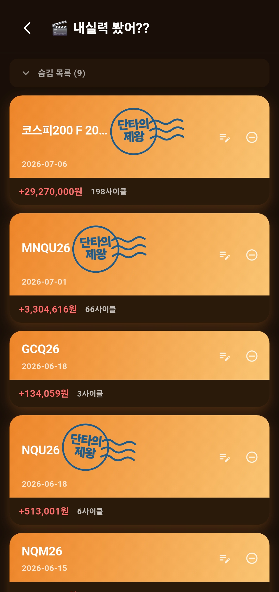
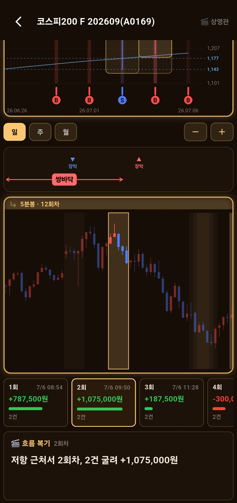
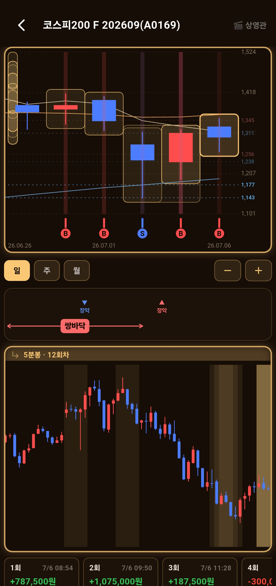

← 포핏플레이 목차
Pawfit! 포핏!!
🎬 내실력 봤어??
내 매매를 필름처럼 되짚어봐요 🐾
알림으로 쌓인 내 진짜 매매를 종목별로 자동으로 모아, 필름처럼 되짚어보는 복기 코너예요. 내가 언제 샀는지(B)·팔았는지(S)를 그 종목 실제 차트 위에 얹어서, 어떤 흐름에서 그 매매가 나왔는지 다시 볼 수 있어요.
① 종목별로 저절로 쌓여요
따로 만들 것 없어요. 매매가 기록되면 그 종목의 목록이 자동으로 생기고, 같은 종목은 하나의 히스토리로 계속 쌓여요. 카드마다 누적 손익 · 사이클 수 · 최근 매매일이 보여요. (한 종목을 샀다가 정리할 때까지가 한 사이클 — 한 판이에요.)
🏅 매매 칭호 — 카드에 도장처럼 찍혀요
매매 성적에 따라 종목 카드에 도장처럼 위트 있는 칭호가 찍혀요. 재미로 봐주세요 😄
인생종목
존버장인
단타의제왕
증권사효자
블랙홀
지뢰

종목마다 카드 — 매매 칭호 · 누적 손익 · 사이클 수
정리·감추기 카드의 연필로 한 줄 메모를, ➖로 목록에서 감출 수 있어요(숨김 목록으로 접혀요). 감춰도 기록이 지워지는 건 아니에요.
② 상영관 — 3칸으로 되짚기
종목 카드를 누르면 상영관이 열려요. 위에서 아래로 세 칸으로 되짚어봐요.
1
위 — 내 매매 지점이 찍힌 차트
일봉·주봉·월봉을 바꿔가며 ＋／－로 확대·축소해요. 내가 매매한 날은 캔들에 박스로 표시돼 있어, 그 박스를 누르면 아래 칸에 상세가 나와요. 차트 바로 밑엔 그 구간의 간단한 추세 패턴(쌍바닥 같은)도 짚어줘요 — 내가 어디쯤에서 샀는지 보이라고요.
2
가운데 — 그 매매의 상세와 사이클
보유 기간에 맞춰 5분봉부터, 길어질수록 일·주봉으로 그 순간을 자세히 보여줘요. 차트 밑엔 사이클(회차)별 수익금이 나오고, 박스를 누르면 그 매매의 사고(B)·판(S) 지점 마커가 차트에 표시돼요.
3
아래 — 흐름 복기 한 줄
"저항 근처서 2회차, 2건 굴려 +1,075,000원"처럼, 몇 번 매매해서 얼마 벌었는지 간단히 짚어주는 곳이에요.

상영관 — 위 차트(패턴) · 가운데 상세(회차 손익) · 아래 흐름 복기

확대하면 — 매매한 캔들이 박스로 또렷하게
매매 기록이 재료예요. 상영관은 알림으로 쌓인 매매일지를 바탕으로 만들어져요. 매매 알림이 자세할수록 더 정확하게 되짚을 수 있어요.